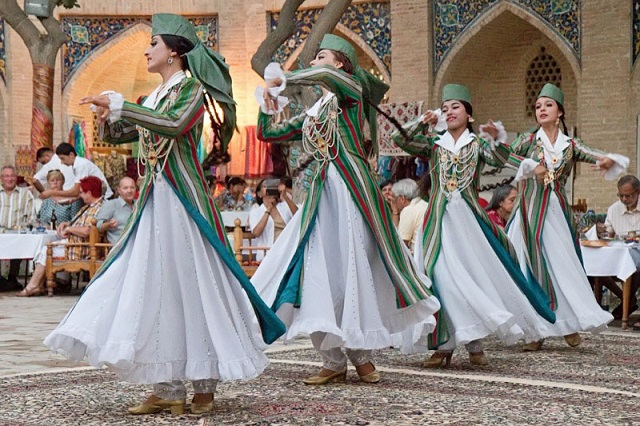

Culture of Uzbekistan

The culture of Uzbekistan is vibrant and unique—it was formed over thousands of years. It is a kind of fusion of the most diverse traditions of many peoples, which are reflected in folk music, dancing, painting, applied art, national cuisine and clothing. Uzbek folk culture has been formed over the centureies and is distinguished by an extraordinary, original and vibrant character among other cultures of the East. The ancient Iranian people and later nomadeic Turkic tribes, Arabs, Chinese and Russians have all contirubuted to it. Many residents of the republic, especially in rural area, still adhere to many traditions that have their roots in the distant past.
